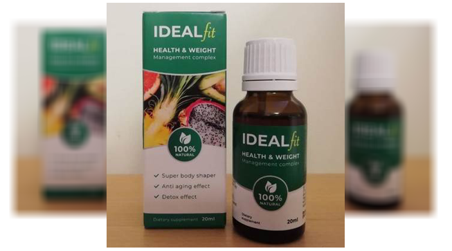
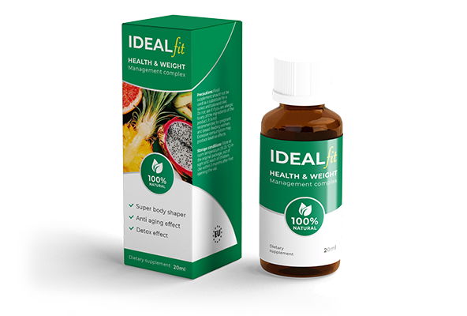
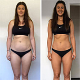

Il sovrappeso è un vero e proprio ostacolo sulla strada per avere successo, adesso ne sono sicura! E ora vi racconto un modo accessibile per dimagrire in sole 3-4 settimane senza sforzi. Eccolo qui...
Ciao a tutti! Mi chiamo Alice, ho 29 anni. Circa 2 mesi fa ho perso 19-20 chili senza dieta, né sport, né esercizi!
E' oggi che peso 52 chili come in questa foto.
Ma prima ero così... In quel momento pesavo 73 chili.
Vedete la differenza?
Ero grassa e sola. Esatto.
Non mi sono mai preoccupata molto del mio peso, almeno prima di circa 20 anni... Ovviamente sapevo che ero obesa. Tuttavia, il mio peso non è stato un problema per me fino al giorno in cui ho realizzato che i ragazzi non mi guardavano.
Quando, per esempio, passeggiavo con la mia amica i ragazzi volevano fare la conoscenza con lei, non con me... Non si accorgevano di me... ero frustrata. Anche se sorridevo o facevo gli occhi dolci a loro... comunque, ero grassa e nessuno voleva una ragazza così. Però un giorno mi è successo qualcosa che ha cambiato tutto e ho deciso di fare qualcosa con la mia obesità!
Ecco perché agli uomini non picciono le ciccione!
Un giorno sono stata invitata al compleanno di una mia collega. La festa si è svolta in un bar. C'erano alcuni suoi amici che non conoscevo. C'era un ragazzo che mi piaceva davvero, si chiamava Michele. Ma lui non mi nemmeno notava. Io, anche se ero cicciottella, non mi consideravo brutta e ho deciso di parlare con lui quando tutti sono usciti a fumare.
Abbiamo iniziato una conversazione. Era un po’ tardi. Quando ad un tratto mi chiede “I tuoi figli
dovrebbero già aspettarti a casa, no?” Gli rispondo “Quali bambini? Non ho figli e non li voglio avere
ancora”.
E mi dice “Alla tua età si deve già pensarci”
E io “Aspetta, aspetta, quanti anni pensi che io abbia?”
Lui “Beh, è maleducazione chiedere l’età alle signore, ma direi forse 36, o 37, o forse 39?”
E io ne avevo 29! Trent’anni erano per me troppo. Mi sono corsa via con le lacrime agli occhi.
La storia con Michele ve la racconterò dopo perché ha una continuazione...
Poi su Internet ho letto un articolo su un’idagine in cui gli uomini cercavano di indovinare l’età
delle donne guardando le foto. Tutte le donne erano COETANEE. Tuttavia, lo studio ha rilevato che le
donne più grasse sembravano più vecchie, mentre quelle donne che avevano una figura snella e slanciata
sembravano più giovani!!!
I risultati hanno mostrato che le donne più grasse, dicono gli uomini (1.700 partecipanti), mostrano visualmente più vecchie in media di 7,5 anni. Allo stesso tempo, i partecipanti hanno notato che le donne snelle sembrano almeno 5 anni più giovani della loro età reale. In breve, questo esperimento ha risposto alla domanda sul perché più dell'85% degli uomini preferisce le donne snelle piuttosto che obese. Molti di loro spiegano che preferiscono fare sesso con ragazze magre perché sono molto più attraenti e giovani di quelle con i chili in eccesso. La triste verità.
Allora ho capito perché Michele aveva pensato che avessi più anni. Era il mio sovrappeso che ha causato quella confusione!
La decisione è presa: devo in tutti i costi perdere peso! Ma come lo faccio?
Dopo tutto questo avevo una grande voglia di dimagrire! Ma non sapevo con che cosa cominciare.
Ho fatto una dieta a basso contenuto di carboidrati per 2 settimane. Ho perso un po' di peso, ma poi è tornato, ho preso anche di più.
Non sono una persona molto sportiva perché soffro di ipertensione fin dall'infanzia. E in generale, non tutti sono adatti allo sport, neanche io.
Così ho iniziato a cercare un modo per dimagrire senza seguire una dieta rigida e senza fare esercizi o attività fisica.
Il rimedio perfetto per perdere peso!
L'ho trovato!
Per la prima volta ho saputo delle gocce IdealFit in un forum femminile su Internet, ma non c’ho prestato molta attenzione. Una volta ho provato alcune pillole dimagranti e non ho avuto risultati, solo allergie e sbalzi di pressione. Perciò avevo paura di acquistare IdealFit, anche se molte ragazze avevano scritto che erano molto efficaci.
Ciò che più mi interessava del prodotto era l'insolita composizione. Il preparato contiene estratto di bacche di Goji, estratto di tè verde, N-acetyl-L-carnitine, estratto di semi di guaranà, complesso di vitamine e così via.
Comunque sia, devo provarle!
E finalmente le ho comprate!! E credetemi, non me ne pento!
Non so se è lo stesso con tutti, ma mi hanno aiutato molto. Prendevo 25 gocce 2 volte al giorno. Ogni
giorno vedevo i cambiamenti nel mio corpo!
Ho perso 20 kg in 2 mesi! I primi 10 kg li ho persi in 2,5 settimane, è normale. Non ho avuto alcuna flaccidità della pelle o riduzione del seno di cui molte donne si lamentano quando perdono peso velocemente, per esempio, 10 kg in una settimana.
Non ho cambiato il mio stile di vita. Di notte, naturalmente, cercavo di non mangiare, ma non sempre ci riuscivo. Anche se questo in generale non ha influenzato il mio risultato. Ho provato a camminare di più, ma non sono andata in palestra, e non ho nemmeno girato l'hula hoop.
Grazie a IdealFit si scopre che si può perdere peso senza dover fare tutto ciò. Però penso che se forse avessi praticato lo sport, avrei potuto perdere peso più velocemente. Ma ora non importa davvero. Mi piace il risultato che ho ottenuto, l’avete visto.
E ora la cosa più
Mi sono sposata!
Il mio marito si chiama Michele Leonetti. Avete capito chi è? Ricordate quel ragazzo che ho incontrato al
compleanno dell mia amica? Eh sì... quello stesso Michele! quello che pensava che fossi già una signora con
bambini.
E’ succeso che con Michele ci siamo incontrati di nuovo da quella mia amica, ma allora ero magra perché avevo preso IdealFit. Quella volta è stato lui a cominciare la conversazione! All'inizio non mi ha riconosciuto, ma gli ho ricordato quel caso. Era scioccato! La cosa migliore che ti dà il dimagrimento è vedere come tutti ti guardano, anche i tuoi amici, che ti chiedono continuamente: cosa ti è successo? ti sei innamorata?
È meraviglioso vedere come tutti gli uomini ti guardano solo quando cammini così bella e snella! Qualsiasi cosa dicano, l’apparenza è molto importante! E un doppio mento, qualche rotolo di grasso sui fianchi o una pancia sporgente non è esattamente quello che stanno cercando gli uomini. E posso capirli.
Ragazze, non ascoltate gli psicologi che vi dicono solo tipo "E’ normale che sei obesa! Devi solo amare il tuo corpo e sarai felice...” Menzogna! Sì, certo, ti puoi convincere che sei bella proprio come sei ... ma come lo mostri agli uomini? Non si può nascondere il grasso!
P.S. Lascio qui il link, dove ho ordinato le gocce, perché non posso rispondere personalmente a ciascuno! A proposito, quando io le ho comprate, il prezzo era 90 euro, ma ora dicono che c’è uno sconto ... ora si può acquistarle a metà prezzo, costano solo 39 euro! Non lo so di sicuro, non ho visitato il sito già da tanto...
Beppe
Ciao, Alice! Sei bellissima! Hai ragione, il sovrappeso guasta l'immagine della donna! Bravissima!
1 ora fa
Sara
Un risultato fighissimo! Anche io vorrei lo stesso... Magari dovrei comprarmele queste gocce
2 ore fa
Irene
Finalmente posso vantarmi del mio risultato! Meno 14 kg in un mese! Che ne dite delle foto? 
4 ore fa
Alice
Irene, wow, che risultato! E' meglio del mio, secondo me!
2 ore fa
Francesca
In Thailandia io e mio marito ci siamo accorti che lì tutti mangiavano il rambutan! Nelle quantità enormi. Qui è quasi impossibile mangiarlo molto. E' bello che hanno inventato le gocce concetrate con fitorisina. Ditemi, per piacere, quanto tempo si deve prenderle?
5 ore fa
Claudia
Ciao a tutti! Uso IdealFit già da due settimane, le ho ordinate sul sito uffiaciale che ci avevi consigliato. Ho perso 5 chili, sia la mia pancia che i fianchi sono ridotti! Sono contenta! Prima quando andavo in palestra non riuscivo a ottenere l'effetto così!
8 ore fa
Simona
Ho preso le gocce per circa un mese, ho perso 15 cm di girovita, ma il seno e le natiche non sono ridotti affatto. Prendevo IdealFit 2 volte al giorno: di sera e di mattina..
ieri
Lorenzo
Salve! E gli uomini possono prendere le gocce? Dovrei eliminare la pancia
ieri
Alice
Lorenzo, perché no? Il mio frattello maggiore le prendeva ed è dimagrito notevolmente
ieri
Nora
Grazie mille! Ne ho sentito parlare che il rambutan e kiwano sono utili per il dimagrimento. Ho ordinato 4 pacche. A proposito, lo sconto del 53% è ancora valido! Le ho comprate per 39 euro!
2 giorni fa
Tiziana
Anche con me succede lo stesso. I maschi pensano che ne abbia 40. Ho notato anche che per le ragazze snelle è più facile trovare un lavoro, e a me dicono sempre "la richiameremo" e basta. Cosa posso fare?
3 giorni fa
Sofia
Tiziana, non perdere la speranza! Un mese fa anche io avevo una situazione del genere. Non avevo né un uomo, né un lavoro. Ero grassa e pesavo 90 kg. Ma guardami adesso. Ho preso IdealFit. Che ne dici ora?
2 giorni fa
Margherita
Mamma mia! Sei un'altra persona! Ma è davvero possibile senza diete?
3 giorni fa
Virginia
Che bello! Devo comprarmele anch'io
4 giorni fa
Beatrice
Forse anche io vi lascio qui la mia opinione al riguardo. Ho fatto molto per dimagrire: prendevo le pillole, ma come risultato ho ottenuto solo irritazione della pelle. Per me IdealFit è la variante migliore! Si dimagrisce senza mettersi a dieta o soffrire in palestra. E l'importante è che non c'è nessuna allergia!
4 giorni fa
Luigi
Alice, è meraviglioso! Sei bellissima, invidio tuo marito!
4 giorni fa
Alice
Grazie, sono imbarazzata! :)
4 giorni fa
Elena
Perla prima volta ho sentito di IdealFit, me le ha raccomandate la mia amica che è dietologa. Le ho comrate ed ecco il risultato! Ho smesso di prendere le gocce moòto tempo fa, ma il peso non torna, un rimedio fantastico!
5 giorni fa
Carlotta
Magnifico! Ti invidio, anch'io voglio così! Le compro e poi scrivo se davvero funzionano
5 giorni fa
Serena
Non ci credo che si può ottenere tale risultato senza diete e sport. A proposito, non si può comprarle queste gocce?
5 giorni fa
Carolina
Non ascoltare i detologi e le persone del genere.. Meglio compra le gocce sul sito ufficiale di IdealFit
6 giorni fa